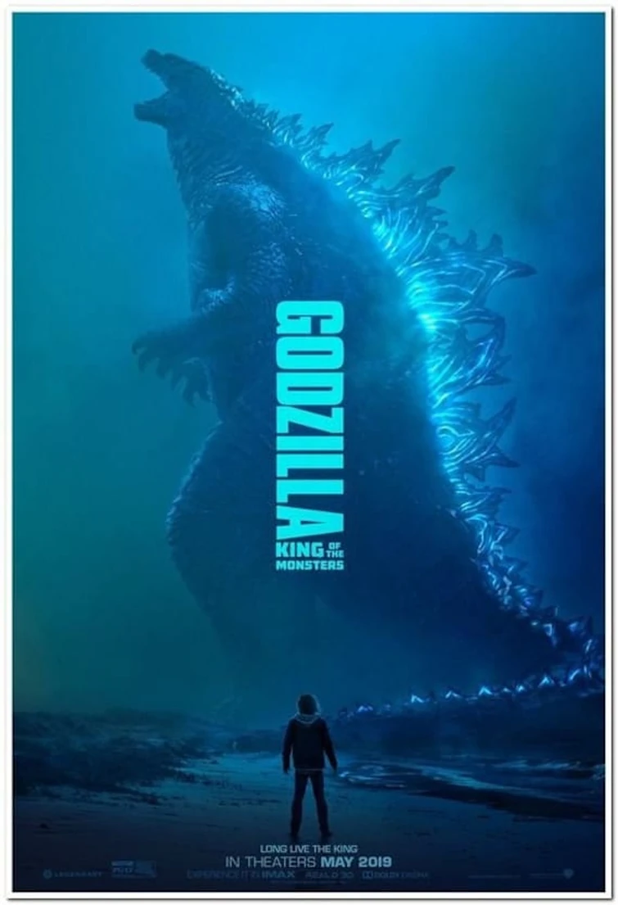
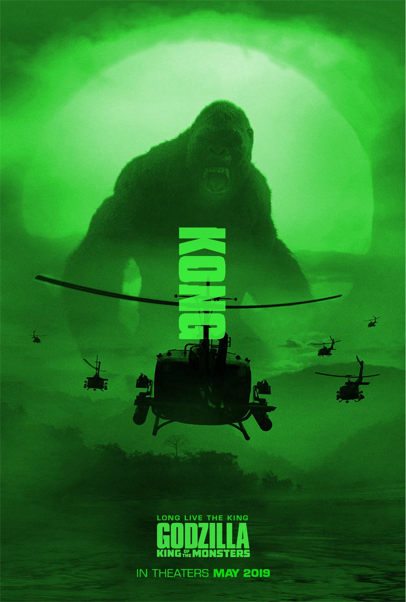
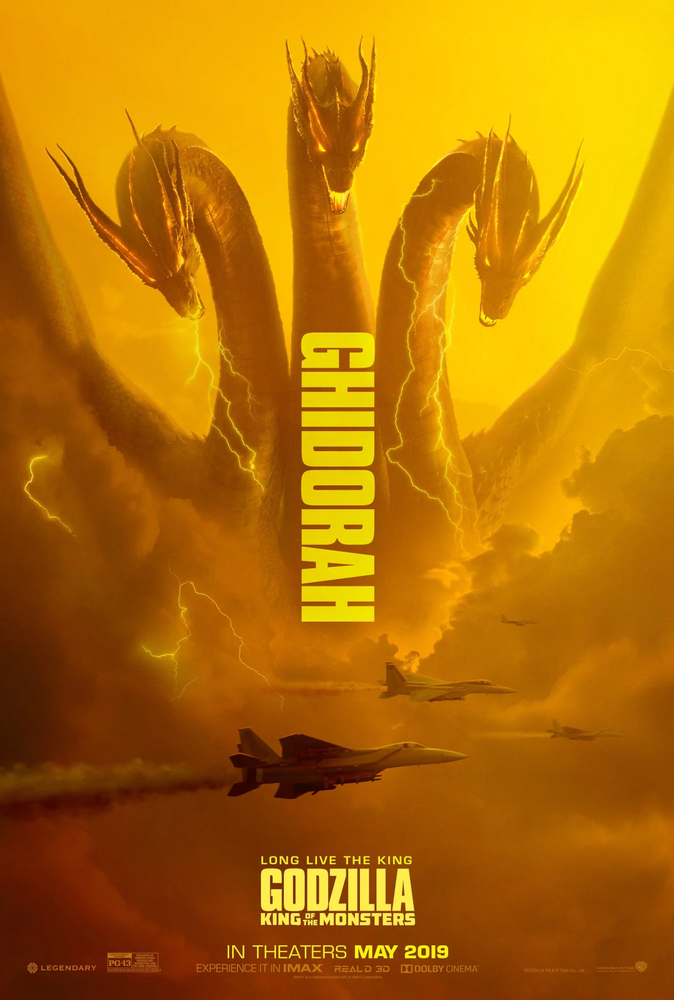

| Kaiju | Info | Appearances |
|---|---|---|
|  | Godzilla, also known as "The monster who ate a star", is most known for his strength, powerful abilities, extreme endurance, and superiority as the king of the monsters. | Godzilla (2014) Godzilla: King of the Monsters (2019) Godzilla vs Kong (2021) Godzilla x Kong: The New Empire (2024) |
|  | Kong, the cunning, strong, and brutal ape, survived the extinction of his kind on Skull Island, and now thrives and rules the Hollow Earth. | Kong: Skull Island (2017) Godzilla vs Kong (2021) Godzilla x Kong: The New Empire (2024) |
|  | Ghidorah, nicknamed "Monster Zero", originated from territories beyond our planet, and wishes to bring terror and destruction upon Earth. | Godzilla: King of the Monsters (2019) |